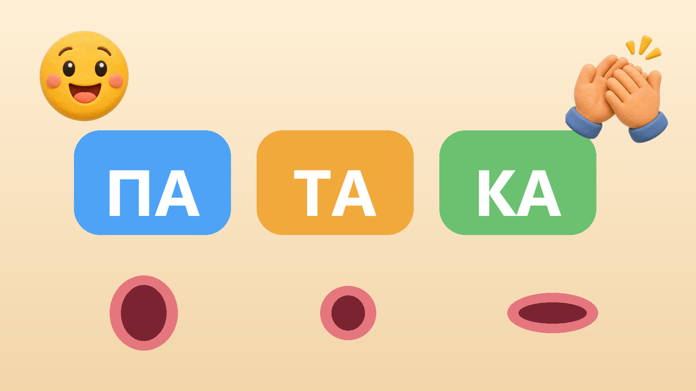

Принцип: действие, затем фраза
Ребёнок перетаскивает предмет и сразу проговаривает результат: «Мячик в шкафу», «Я отдал куртку Оле». Движение связывает слово с действием, а полная фраза закрепляет предложно-падежную конструкцию.
Три этапа работы
- Предлоги. Занятие «Где мячик?» работает с предлогами «в», «на», «под», «за», «около». Ребёнок двигает мячик пальцем по семи комнатам и отвечает на вопрос «Где мячик?». Можно поменяться ролями: ребёнок даёт инструкцию, а вы выполняете.
- Согласование и падежи. «Чья вещь? Кому отдадим?» работает с родом, числом, падежами и притяжательными местоимениями (чей, чья, чьё, чьи). Четыре уровня идут от простых форм к более сложным.
- Связная речь с грамматикой. «Один день в детском саду»: восемь сцен с вопросами, перетаскиванием предметов и итоговым рассказом.

Как давать подсказки
- сначала дайте образец целой фразы, затем попросите повторить;
- если ошибка в окончании, повторите правильно, не ругая: «Да, это Мишин мяч»;
- постепенно уменьшайте подсказку: образец, начало фразы, самостоятельный ответ;
- для проверки самостоятельности используйте режим «Диагностика» там, где он есть.
Для кого подходит
Для детей с общим недоразвитием речи, задержкой речевого развития, аграмматизмом, а также для билингвов и детей за границей, изучающих русский язык. Занятия можно использовать в подготовке к школе.
Занятия не заменяют логопедическое обследование и работу специалиста: это материал для вашей работы, а не диагностика.
Вопросы и ответы
С какого возраста подходит «Где мячик?»
Занятие рассчитано на детей от 3 лет. Сложность выбирает специалист.
Подходят ли занятия билингвам?
Да, они помогают закреплять предлоги, род, число и падежи в русском языке.
Можно ли заменить ими очную работу?
Нет, это материал для вашей работы и домашнего закрепления.
Статья носит общий информационный характер, не заменяет консультацию специалиста и не ставит диагноз: диагноз ставит врач. Если вы тревожитесь за ребёнка, обратитесь к педиатру, неврологу или другому врачу.
Все занятия бесплатны и открываются в браузере, регистрация не нужна.
Открыть занятия